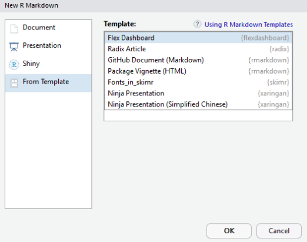

以往在做分析結果的報告時，必須將分析結果的圖形或表格在 power point 上排版。常常會遇到排版加上美化，就花去很多時間，顯得很沒效率。如果一定要 docx 或 pptx，可以使用 officer 套件，讓 R 直接編輯並輸出檔案。
另外一種是使用 R 語言中系統性的輸出方案，分成兩大類：
因 shiny 需要在部屬 R 服務端時作用，並使用 shinydashboard 作為前端顯示結果的 UI，因此這個方案我只會在用自己的電腦進行分析時使用。若你可以對你進行報告的電腦做好 R Shiny 部署，可以使用這個方案。
rmarkdown 是 markdwon 語法的擴展，可以讓 R 語言在 markdown 中運作。而 flexdashboard 則類似於 shinydashboard，可以使 rmarkdown 靈活的佈局、擴展，而且可以輸出 pdf、docx、tex 及 html 等格式的文件檔，十分直覺且方便。
本文針對沒有部屬 R 後臺服務時，採用 rmarkdown + flexdashboard 一次性輸出的 html 檔案來進行簡報或結果展示。以下對於各種佈局進行示範，以及其對應的 rmd 編碼。請注意，因為是 RWD 自適應頁面以及螢幕解析度的關係，在手機上看可能無法顯示完整的佈局。
在 Rstudio 中進行套件安裝：
install.packages("rmarkdown")
install.packages("flexdashboard")安裝完成後，從選單新增 Rmarkdown 的文件，選擇 flexdashboard 的底版進行編輯

當文件頭 yaml 中的參數設定 vertical_layout: fill 時，所有圖表的高度會根據當前瀏覽器頁面高度自動調整。
當文件頭 yaml 中的參數設定 vertical_layout: scroll 時，瀏覽器中顯示的圖表會保持原本大小不變動，若超出頁面則以捲軸拉選。
flexdashboard 可以多列佈局，只要在程式碼中宣告 Column 參數即可，並可定義各列列寬。
多行佈局和多列佈局類似，只要在 yaml 中加入參數設定 orientation: rows，並將程式碼中 Column 改成 Row 即可。同樣可定義各行的行高。
使用 flexdashoard 中的 {.tabset} 可以讓頁面在指定的 Column 上產生切換功能
使用 flexdashoard 中的 {.tabset} 可以讓頁面在指定的 Row 上產生切換功能
flexdashoard 使用 level 1 markdown header (==============) 進行多頁佈局。
故事版面